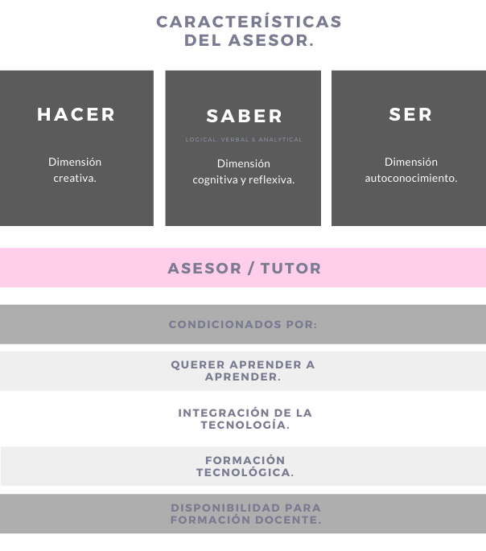

Instrumento de evaluación
Temas
Asesoria Escolar y Educativa
En esta unidad se presentarán temáticas relacionadas con la asesoría educativa, principales características, objetivos, tipos, modelos, áreas y funciones del psicopedagogo como asesor, asimismo para un mayor refuerzo del tema se encuentran actividades didácticas en las que se ponen en práctica las teorías.
¿Qué es la asesoría educativa?
La Asesoría educativa es una práctica profesional en construcción, controvertida, con múltiples posibilidades de desarrollo y, en momentos, de cambio y complejidad, en la que proceden revisiones y re-significaciones. Su función principal es orientar la gestión institucional hacia el cumplimiento de los estándares de calidad educativa.
¿Qué es un asesor educativo?
Un asesor educativo es un ser integralmente humano, competente para entender y comprender las diferentes y complejas situaciones que envuelven la vida escolar de los aprendientes. Capacitado para aconsejar pertinentemente, ya que, no solo atiende los lineamientos que le dicta su ética profesional, la cual lo envía a sus estudiantes, sino también, sabe escuchar a los estudiantes a los cuales lo envía su carrera. Es un cómplice del estudiante en su transitar educativo. El rol del asesor educativo no debe confundirse con las funciones de los docentes y directivos de la institución, ya que desempeñan diferentes obligaciones para con el estudiante.
Características de una asesoría (H. Navarro, 2002)
- La asesoría debe ser una actividad de profesionales: La asesoría exige profesionalismo. Suele confundirse al buen asesor con el experto en el contenido de la asesoría, sin embargo no basta el dominio del contenido (incluso siendo éste "conocimiento práctico"), es necesario también saber comunicar (saber escuchar y saber interpretar y decir, legitimando-respetando el saber de la organización escolar) y, más específicamente, saber transferir conocimientos teóricos y conceptuales vinculados con la experiencia específica de la escuela y, sobre todo, nuevas capacidades de gestión.
- Hay que considerar la asesoría como una relación ética, que se funda en la credibilidad, la confianza y la colaboración.
- La asesoría suma al progreso institucional, esta debe ampliar la mirada, buscar de otros campos o profesiones distintas al psicopedagogo, con el fin de brindar mejores soluciones a través de la reflexión y análisis para mejorar la institución.
La psicopedagogía en la asesoría
Podcast perfil psicopedagogo (Radio UTPL Ecuador - Primera entrega de la programación denominada desenfoques).
La psicopedagogía nace de dos ramas: La psicología (ser humano) y la pedagogía (aprendizaje)
En el psicopedagogo una de sus funciones principales es diagnosticar y evaluar si existe una discapacidad propia o si es una necesidad educativa especial (NEE) que tiene un lapso, teniendo en cuenta también si tiene una discapacidad formal. Debido a esto los profesionales de esta área deben tener conocimiento de temas biológicos y neurológicos, además de los necesarios de por sí ya en la carrera.
Ser psicopedagogo gira en torno a una vocación humana; una vocación de ayuda y compromiso latente, día a día.
Conocer y trabajar ¿quién?, ¿cómo?, ¿por qué?, ¿quiénes? y factores internos, externos que influyan en el proceso.
- “Hacer lo que nos gusta con amor”.
Asesoría Educativa
Asesoría, es orientación al estudiante en el proceso de aprendizaje, en el desarrollo como persona, como profesional y como miembro de la comunidad. La palabra asesor, significa, sustentar, estar cerca para auxiliar, y permite que el estudiante vislumbre y descubra los caminos del saber. El asesor es un maestro que enseña a aprender; es un orientador y guía que refuerza lo que le surge al estudiante en el proceso de aprendizaje; debe saber que el estudiante es el centro del acto educativo y el actor de su propio proceso de aprendizaje.Pasos Fundamentales de una asesoría
Preparación del asesor
→Diagnóstico
→Intervención en procesos de aprendizaje
→Evaluación del sistema
→Autocontrol de resultados.
Funciones del asesor
- Orientación y consejería
- Seguimiento y motivación.
- Asesoría en el proceso enseñanza-aprendizaje.
- Lograr una asesoría creativa.
- Desarrollo de técnicas y habilidades.
- Establecer y fortalecer vínculos.
- Fomentar el pensamiento flexible.
- Incrementar la capacidad psicopedagógica.
- Asesoría académica y administrativa.
- Apoyo al trabajo en grupo.
- Investigación y desarrollo.
Características del asesor
Modelos
Modelo de intervención: ¿Qué debo hacer?
Modelo de facilitación: Habilidad para realizar asesorías inter y disciplinarias.
Modelo de colaboración: ¿Hasta dónde necesito de las personas?
Formas de asesoría
- A distancia
- Directa
- Indirecta
Áreas de asesoría
Área psicoafectiva: El estudiante se conoce, el asesor apoya al estudiante en la búsqueda de soluciones a sus problemas personales, sociales y familiares; busca apoyo en otras personas o dependencias de la institución.
Área social: Apoyo hacia otra instancia fuera de la institución, pero que colabora con.
Área académica: Detectar y conocer los intereses y problemas de los estudiantes en su proceso de aprendizaje.
Tipos de asesoría
Según el número de estudiantes:
La asesoría se puede dar en grupos numerosos, pequeños o en forma individual.- Asesoría grupal
- Asesoría Individual
Según el modo de realizarse
Puede ser presencial, o distancia- Asesoría Presencial
- Asesoría a distancia
Actividades
Carta al chico Omega
En este momento me acordé de ti y me animé a escribirte porque hace rato no hablamos. ¡Es más, sería bueno volver a jugar canicas contigo! Me enteré que algunos chicos te están molestando. Eso no está nada bien y me hubiera gustado escuchar tu versión de la historia. ¿Sabes? Muchas veces, infortunadamente, la vida nos pone frente a situaciones y personas que no nos agradan y es justo en ese momento que debemos aprender a ser valientes, quizá creemos que no es el mejor momento para hacerlo porque sentimos que todo en nuestra vida se derrumba y que no vale la pena luchar y seguir adelante; pero quiero que sepas que sí vale la pena, SIEMPRE vale la pena continuar. Recuerda que tu bienestar no tiene que depender de algo o de alguien.
¡No te detengas! Sigue luchando por tus sueños aunque no salgan las cosas como esperes, esto solo es una pequeña fracción de nuestro paso por el mundo y no hay que quedarse ahí, pues hay muchas más personas, amigos, situaciones que debes vivir y aprovechar al máximo porque de eso se trata la vida; un constante proceso de aprendizaje lleno de altibajos y batallas de las que debemos salir más fuertes y continuar.
Y aunque la adolescencia es un periodo difícil en la vida de muchas personas, más allá de todas las complicaciones y episodios frustrantes, nosotros mismos somos los encargados de crear nuestra vida y nuestra realidad; para eso hay que trabajar en el optimismo, ver los obstáculos como un aprendizaje, enfrentándolos y superándolos. Vivir las experiencias, los logros y los desaciertos siempre con una visión positiva, este estilo de vida no es para nada perfecto, pero sí nos abre a muchas vivencias. Los momentos difíciles que has pasado, en unos años los recordarás como situaciones amargas, pero que lograste superar.
Encontrar una persona con la cual compartas algunos de tus gustos siempre es una gran idea. Piensa en lo que te gusta y encuentra a compañeros que compartan esto, no será nada fácil, pero hay que dejar el miedo y la pena; el problema no eres tú, ni tu actitud, solo que no has encontrado a las personas correctas.
Plan de orientación
Breve descripción de la situación en el aula: día, hora, contexto, etc…
La Institución “Los individuos” del municipio de La Jagua del Ibirico, se contactó con los asesores educativos el día 01 de agosto del 2018 en correlación con el caso de una docente de 50 años que llega nueva a tal institución. Esta licenciada presenta algunos inconvenientes con sus estudiantes.
Reconstrucción completa de la situación: inicio, detonantes, pensamientos, dudas, sentimientos, reacciones, decisiones, acciones, etc.
Una docente de 49 años, especializada en el área de inglés ingresa a la institución como profesora de Inglés de los grados décimo y undécimo. A las dos semanas de haber ingresado la profesora Agatha Castro a la institución, empieza a tener inconvenientes con los estudiantes de undécimo. Pues ellos hacían desorden, hablaban en clase usando vocabulario vulgar generando indisciplina y no desarrollaban las temáticas planteadas por la profesora. Fue tal la situación que, en una de las clases del idioma extranjero, cuando ella iba a aplicar un examen, los estudiantes empezaron a sacar celulares y a copiarse entre sí, en un momento de descuido le cerraron la puerta y ella quedó en el pasillo desubicada y devastada por un rato, mientras ellos se burlaban y seguían en su copia del examen.
Esta situación llegó a los oídos de la rectora, la cual, inmediatamente restablece el orden de la clase y decidió tomar cartas en el asunto. En primer lugar, sostuvo una conversación con la profesora Agatha, en la cual la profesora expresó sentir desmotivación, frustración y vulnerabilidad, inclusive decepción de sus habilidades como docente, por esto ha pensado en desistir a su cargo. Fue tal la preocupación de la directiva, que decidió pedir asesoría educativa.
En la conversación entre la rectora y la profesora surgieron dudas que giraban entorno al porqué de las actitudes y acciones de los estudiantes hacia su profesora de inglés, o el porqué la profesora no ha podido generar una atmósfera de confianza con sus estudiantes.
-
Reflexión: ¿Cómo afectó o afecta la situación?, ¿Cómo se ha reaccionado ante la situación?, ¿Qué se ha hecho?
Esta situación afecta en gran índice la relación docente-estudiante y no existe una comunicación efectiva entre los implicados, lo que involucra una atmósfera de caos y desorden. Ya que la licenciada no tomó un debido proceso de contacto con sus directivos para comunicar la situación que estaba viviendo, sino que se guardó para sí las irregularidades, propició que la situación empeorara y los estudiantes tomarán más acciones negativas en contra de la profesora Agatha. Lo que, en consecuencia, resultó en faltas de respeto cada vez mayores que dieron origen a la desmotivación y proposición de renuncia por parte de la profesora de la clase de Inglés. Es de resaltar el manejo que le dio la Rectora de la institución, la cual, al darle el orden a las cosas, platicó con la licenciada y, en cuanto pudo, buscó una asesoría educativa.
-
Acciones que lleven a la solución de la situación:
- Acercamiento de los asesores a la institución a través de la rectora.
- Observación en primer plano del aula y las interacciones en una clase.
- Conversación entre estudiantes y asesores.
- Conversación entre docente y asesores.
- Se sugiere a la institución una sesión psicológica a la docente.
- Elaboración de un Plan de Asesoramiento:
- Charlas sobre comunicación asertiva, respeto, sana convivencia a los estudiantes.
- Implementar a los estudiantes talleres sobre la importancia del respeto, la empatía y las relaciones interpersonales.
- Proponer estrategias de enseñanza-aprendizaje y buen manejo del aula a la docente, por medio de tutorías, videos y textos explicativos.
- Espacios que propicien lazos de confianza entre los estudiantes y la profesora.
- Seguimiento y evaluación del progreso del plan de asesoramiento.
- El seguimiento debe ser continuo para un mejor resultado del plan.
- Presentación del informe con los datos y las conclusiones obtenidas a la directiva y la docente.
Crucigrama asesoría educativa
Orientación Escolar
La orientación escolar es una estrategia de detección, tratamiento y/o prevención de problemas de muy variado tipo, de aprendizaje, personales y vocacionales, que se considera, repercuten negativamente en los procesos de enseñanza-aprendizaje y, que siendo tratados, mejorarían la vida de los estudiantes. La orientación escolar se realiza a través de una serie de entrevistas educativas y de consejos adaptados al proyecto personal de cada individuo.
Funciones de la orientación
La orientación escolar puede aparecer en distintos niveles: Ayuda a la hora de redactar un currículum o una carta de motivación; ayuda a la búsqueda de empleo y prácticas; ayuda a la hora de encontrar un centro educativo; brinda herramientas para una reorientación dentro del sistema educativo; brinda los conocimientos respecto a procesos de inscripción en una carrera universitaria; brinda procesos de asesoramiento personalizado para evitar repetir o abandonar los estudios; facilita herramientas para el análisis de resultados escolares, etc.Papel del orientador:
- Ayudar a los estudiantes a escoger sus estudios universitarios.
- Identificación de necesidades educativas especiales (NEE)
- Asesoramiento psicopedagógico a los profesores
- Asesoramiento a las familias en su labor educativa.
- Coordinación internos y externos a los centros (servicios médicos y sociales)
- Formación continua.
Funciones del orientador
- Diagnostico: Explorar contextos escolares para ayudarles a comprenderse a sí mismos en cuanto a sus posibilidades educativas; abarcando cuatro áreas:
- Biológica
- Psicológica
- Psicopedagógica
- Ambiental o contextual.
- Asesoramiento: Tiene como objetivo aconsejar al alumno para conocerse a sí mismo para facilitar la toma de decisiones personales. Esta función abarca tres dimensiones:
- Dimensión escolar
- Vocacional
- Personal
Realización de un plan de Orientación Escolar
El plan de orientación escolar es una solución adaptada a cada alumno. El orientador le hará al estudiante todas las preguntas adecuadas y realizará una evaluación profesional para poder encontrar una vía general o especializada que se adapte a la personalidad del orientado.Un informe de orientación está compuesto por:
- Una fase preliminar: presentación del informe de orientación, debate sobre las expectativas del alumno.
- Una fase de investigación: interrogatorio exhaustivo al alumno, pruebas de orientación, tests de personalidad, folletos sobre las escuelas de enseñanza superior o prácticas.
- Una fase de análisis: búsqueda de empleo adaptada al proyecto del alumno, estudio de sus competencias escolares y profundización en sus ambiciones
- Una fase de conclusión: presentación de un informe de resumen, preparación de un plan de acción y debate sobre los resultados del informe de orientación.
- Ejemplo de plan de orientación escolar
Diagnostico psicopedagógico.
El diagnóstico psicopedagógico es una de las fases fundamentales y conjunto de herramientas de todo proceso de enseñanza personalizada. Se basa en el estudio de todas las características psicológicas y educativas de un estudiante con el objetivo de fomentar su aprendizaje lo máximo posible.
Objetivo del diagnóstico psicopedagógico
- Conocer la realidad educativa, tanto del estudiante como de la institución educativa.
- Comprobar el progreso del alumno hacia las metas educativas establecidas previamente en el ámbito cognoscitivo, afectivo y psicomotor.
- Identificar los factores del proceso de enseñanza-aprendizaje que interfieran en el óptimo desarrollo individual.
- Adecuar la situación de enseñanza-aprendizaje a las características y necesidades de cada alumno con el fin de asegurar su desarrollo continuo, y ayudarle a superar sus dificultades y/o retrasos.
Bruecker y Bond (1981) identifican tres objetivos fundamentales en el proceso diagnóstico:
Características del diagnóstico psicopedagógico
- Es útil en cualquier contexto de adquisición del conocimiento, aunque suele utilizarse principalmente en casos en los que un estudiante presente algún tipo de problema de aprendizaje.
- Busca identificar un problema.
- Se da en contextos educativos formales.
- Tiene un objetivo concreto.
Elementos del diagnóstico psicopedagógico:
- Estudiante.
- Factores biológicos.
- Contexto.
Funciones y clases de diagnóstico - Buisán y Marín (1987):
- Función preventiva y predictiva: Se trata de conocer las posibilidades y limitaciones del individuo para prever el desarrollo y el aprendizaje futuros.
- Función de identificación del problema y de su gravedad: Pretende averiguar las causas, personales o ambientales, que dificultan el desarrollo del alumno; para modificarlas o corregirlas.
- Función orientadora: Su finalidad es proponer pautas para la intervención, de acuerdo con las necesidades detectadas.
- Función correctiva: Consiste en reorganizar la situación actual mediante la aplicación de la intervención y las recomendaciones oportunas.
Tipos de diagnóstico
- Diagnóstico general o colectivo

- Diagnóstico analítico
- Diagnóstico individual

Fases del diagnóstico psicopedagógico:
Estructura de un diagnóstico psicopedagógico:
- Datos Generales.
- Objetivos: general y específico.
- Aspectos Previos.
- Aspectos evolutivos: historia personal, antecedentes escolares, antecedentes familiares...
- Aspectos de exploración.
- Aspectos de desarrollo evolutivo (desarrollo psicomotor, lateralidad…).
- Desarrollo lingüístico.
- Capacidad Intelectual.
- Aspectos instrumentales y rendimiento académico.
- Personalidad y Conducta.
- Otros.
- Técnicas y Procedimiento aplicados.
- Integración de resultados.
- Aspectos de desarrollo evolutivo (desarrollo psicomotor, lateralidad…).
- Resúmen y conclusiones.
Ejemplo de diagnóstico psicopedagógico
-
Datos Generales.
Esmeralda Alfonso Godoy, nacida el 29 de febrero del 2006, estudiante de octavo grado del Gimnasio Campestre Del Saber, en Suba.
- Objetivos:
- Objetivo general.
- Identificar las causas de la falta de atención por parte de la estudiante.
- Objetivo específico.
- Conocer la realidad educativa tanto de la estudiante como de la institución educativa.
- Establecer si se trata de una Necesidad Educativa Especial (NEE).
- Objetivo general.
- Aspectos Previos.
- Aspectos evolutivos: historia personal, antecedentes escolares, antecedentes familiares...
Presenta dificultad para: Atención focalizada.
- Historia personal: Los padres afirman que esta situación le ha impedido desarrollar la vida académica promedio. Tiene dificultades para entablar vínculos interpersonales, también presenta falta de autocontrol, irritabilidad, ansiedad y frustración. La estudiante menciona su inconformidad en las clases y con el espacio de su salón de clase. También manifiesta que le cuesta escuchar a sus compañeros y profesores. Acepta que presenta episodios de estrés y falta de autocontrol en cuanto a que realiza las actividades de forma rápida.
- Antecedentes escolares: La profesora identifica dificultad para prestar atención a las clases, para controlar sus comportamientos, memorizar trabajos rutinarios, comprender el pasado y el futuro e integrar dos informaciones que le han llegado al mismo tiempo. Nota mayores esfuerzos para escuchar instrucciones y seguir el ritmo de las actividades propuestas en clase. Además, evidencia que la estudiante no puede expresarse correctamente frente a los demás.
- Antecedentes familiares: Se identifica que el bisabuelo de la estudiante presentaba comportamientos similares. A su vez, los padres resaltan poca fluidez verbal en ella.
- Aspectos evolutivos: historia personal, antecedentes escolares, antecedentes familiares...
- Aspectos de exploración.
- Aspectos de desarrollo evolutivo.
- Desarrollo lingüístico: Presenta dificultades al articular palabras y la comprensión de lecturas y párrafo.
- Capacidad Intelectual: Presenta bajo nivel de aprendizaje. La estudiante se desenvuelve menos cognitivamente que el promedio adolescente.
- Aspectos instrumentales y rendimiento académico: Se evidencia desde su historial de notas, un bajo rendimiento académico. Debido a sus diferentes limitaciones, su nivel de rendimiento es bajo.
- Personalidad y Conducta: Se muestra como una persona distraída, solitaria y retraída.
- Técnicas y Procedimiento aplicados.
- Taller sobre las habilidades sociales y la inteligencia emocional.
- Prácticas que ayuden a controlar la impulsividad y fomenten la autorregulación.
- Cambios en el entorno para limitar las distracciones.
- Presentarle instrucciones concretas con una acción por vez.
- Reducción y fragmentación de la información y mayor tiempo para asimilar.
- Proponer una metodología organizacional: plantear listado de actividades que no superen los 20 minutos (cada una) y hacer pausas activas entre ellas.
- Identificar si existen trastornos adyacentes.
- Fomentar el autoconocimiento.
- Integración de resultados.
Se espera que:
- Mejore la comprensión temporal del pasado y futuro y la planificación del tiempo.
- Gracias al autoconocimiento, la estudiante pueda cambiar su perspectiva de las actividades que hace en su diario vivir, identificar lo nocivo para su vida e intentar nuevas maneras de llevar a cabo las actividades rutinarias para evitar la frustración.
- Exista una mayor interacción con sus compañeros.
- Desarrolle una autorregulación media
- Interdisciplinariedad con respecto a trastornos adyacentes (ansiedad, depresión, …)
- Aspectos de desarrollo evolutivo.
- Resúmen y conclusiones.
Esmeralda es una estudiante de octavo grado. A ella se le dificulta concentrarse, seguir el ritmo de sus compañeros y autocontrolarse. Luego de realizar el diagnóstico psicopedagógico, se descubre que padece Trastorno por déficit de atención con hiperactividad, el cual le impide mantener un estilo de vida tranquilo, concentrarse, autorregularse y llevar un rendimiento académico esperado para su edad. Al identificar el trastorno se plantea realizar talleres que propicien modificar positivamente su conducta.
- El docente tendrá como misión: brindar diferentes opciones para demostrar los conocimientos; dejar escoger a la estudiante entre ensayo, examen escrito/oral, informe. Adecuar actividades y pedagogías que beneficien el ambiente y el aprendizaje. Es importante que el docente mantenga un seguimiento continuo.
- La institución educativa debe actuar de manera inclusiva; capacitar a los docentes en el manejo conductual dentro del aula y de la institución, brindar servicios de educación especial y las necesidades educativas especiales, en lo posible adaptar su currículo para los estudiantes que necesiten educación especial
Técnicas de intervención psicopedagógica
-
¿Qué son?
Según Ferrater Mora (1994), “técnica” viene de la palabra griega llamada Téchne , el término hace referencia a una manera de hacer algo, cualquier tipo de procedimiento destinado a producir algo. Poco a poco ha adquirido el significado de habilidad o especialidad para hacer, comenzando a surgir la idea de un procedimiento reglado, descriptible, repetible, que cumple ciertas normas de actuación. Hay que tener en cuenta que las técnicas son simplemente herramientas, no solucionan ni resuelven por sí mismas.
Al referirnos a las técnicas grupales, se hace referencia al cómo del trabajo grupal, es decir, tanto al instrumental desarrollado por el conocimiento, como a la habilidad requerida para poner en práctica ciertas herramientas.
-
Factores
Para seleccionar la técnica más conveniente, habrá que tomar en consideración los siguientes factores:
- Según los objetivos que se persigan: Las técnicas grupales varían en su estructura de acuerdo a los objetivos que pretenden alcanzar. Hay técnicas que promueven el intercambio de ideas y opiniones, otras, que favorecen el aprendizaje de conocimientos, que facilitan la comprensión vivencial de situaciones, que promueven la participación total y que tratan de desarrollar el pensamiento creador, y la capacidad de análisis.
- Según el tamaño del grupo: El comportamiento del grupo depende en gran medida de su tamaño.
- En los grupos pequeños (15 – 20 personas), se da una mayor cohesión e interacción.
- En los grupos grandes (+ de 20 personas), la interacción de los participantes puede verse comprometida, lo que exige una mayor capacidad y experiencia por parte del coordinador.
- Según el ambiente físico y el tiempo: Cuando elegimos una técnica debemos tener en cuenta las posibilidades reales del local y del tiempo. Ciertas técnicas requieren de un espacio amplio que permita la actuación de un grupo numeroso, o el trabajo simultáneo de varios grupos pequeños.
- Según las características de los miembros: Los grupos varían de acuerdo a las características de sus miembros: edades, nivel de instrucción, intereses, expectativas, predisposición, experiencias, etc.
-
Torbellino de ideas
-
¿Qué es?
Consiste en desarrollar y ejercitar la imaginación creadora, fuente de innovaciones, descubrimientos o nuevas soluciones. Entendemos por imaginación creadora, la capacidad de establecer nuevas relaciones entre hechos o integrarlos de una manera distinta.
Esta técnica parte del supuesto básico de que las personas pueden actuar en un clima totalmente informal y con absoluta libertad, para expresar lo que se les ocurra, sea razonable o extravagante, real o imaginario. Existe la posibilidad de que, entre la variedad de ideas imposibles o disparatadas, se puedan construir conceptos, percepciones u opiniones relevantes para el grupo.
-
Objetivos
- Crear un clima informal despreocupado y sin críticas. libre de tensiones.
- Estimular el libre vuelo de la imaginación, hasta cierto punto “irracional”.
- Desarrollar la capacidad para la elaboración de ideas originales.
- Promover la búsqueda de distintas soluciones.
-
¿Cómo se desarrolla esta técnica?
- Definición de la temática.
- Interacción entre los integrantes.
- Información de la temática.
- Exposición de todas las ideas (sin omitir ninguna).
- Establecimiento de conceptos, ideas, fantasías que estén en estrecha vinculación con el tema y otros que no tanto.
- Síntesis y conclusiones.
-
Competencias del asesor y orientador
Las competencias se definen como un conjunto de comportamientos observables relacionados causalmente con un desempeño esperado en un trabajo. (García Sáiz, 2000)
Este profesional debe tener conocimientos en su área, del saber hacer, del saber estar y del querer hacer. Es decir, deberá introducir su personalidad, y buscar los medios y recursos necesarios para abordarla en un determinado contexto. Por esto, la orientación para la transición se configuraría como intermedio entre los individuos, el mercado de trabajo y la formación. (Álvarez González, 1998)
Se señalan como competencias del Profesional de la Asesoría y la Orientación, dos bloques. Uno basado en las competencias centrales y otro en las competencias especializadas:
Competencias Centrales:
- Trabajar desde la ética profesional.
- Promover el aprendizaje personal y/o profesional.
- Interculturalidad.
- Creatividad al momento de intervenir.
- Autoconocimiento.
- Comunicación efectiva.
- Formación continua, cooperación.
Competencias Especializadas.
- Diagnóstico: Definir y analizar las necesidades y contextos de los asesorados, basándose en diferentes instrumentos y técnicas de diagnóstico. Y, de ser necesario, hacer uso de los servicios especiales de apoyo.
- Orientación educativa: Guiar a los individuos y grupos de estudiantes en el desarrollo de sus planes educativos, como también en la toma de decisiones y autoconocimiento.
- Desarrollo de la carrera: En cuanto al conocimiento introductorio adecuado de la carrera, diseño de la misión de vida profesional.
- Consultoría Psicológica: Comprender los principales factores relacionados con el desarrollo personal y comportamental de los asesorados, ayudar a los asesorados en prevención de problemas personales, desarrollo de la personalidad, resolución de problemas, toma de decisiones, identidad sexual, habilidades sociales, educación para la salud y uso del tiempo libre.
- Información: Equipación de la información necesaria para enfrentar la vida laboral.
- Consulta: Trabajando de la mano con otras profesiones para mejorar su perfil.
- Investigación.
- Gestión del empleo en programas y servicios.
- Desarrollo comunitario: Enfocado en la mejora económica, social, educativa y profesional.
Desempeños psicopedagógicos.
Orientación y gestión directiva
Plantea cómo el orientador por ser un profesional de apoyo debe colaborar con el direccionamiento, la cultura y el clima de la institución.
- Comprometidos con el bosquejo, construcción, y actualización del PEI.
- El asesor y orientador están involucrados en la toma de decisiones institucionales dentro del contexto escolar, específicamente en el ámbito directivo.
- Vanguardia de estrategias, cambios sociales y avances tecnológicos en la institución para brindar mejores oportunidades a la comunidad educativa en general.
Orientación y gestión académica
Es la esencia de todo el trabajo en la institución. Abarca el ámbito personal, social y profesional.
- Diseño pedagógico: Currículum.
- Prácticas pedagógicas: Debe saber organizar y utilizar estrategias didácticas.
- Gestión de aula: Evaluaciones, relaciones estudiante-profesor, todo lo que suceda al interior del aula.
- Seguimiento académico.
- Procesos académicos.
- Procesos de enseñanza-aprendizaje en cuanto a habilidades de estudio y dificultades de aprendizaje.
- Procesos de orientación profesional.
- Atención a la diversidad.
Acciones:
Orientación y gestión comunitaria
Actuar al interior de la institución con la comunidad.
- Favorecer la sana convivencia.
- Escuela de padres, crearla o fortalecerla.
- Clima escolar.
- Proyección a la comunidad: Comunicación interinstitucional con el ICBF, procuraduría, defensoría del pueblo, personería, fiscalía general de la Nación, juzgados de familia.